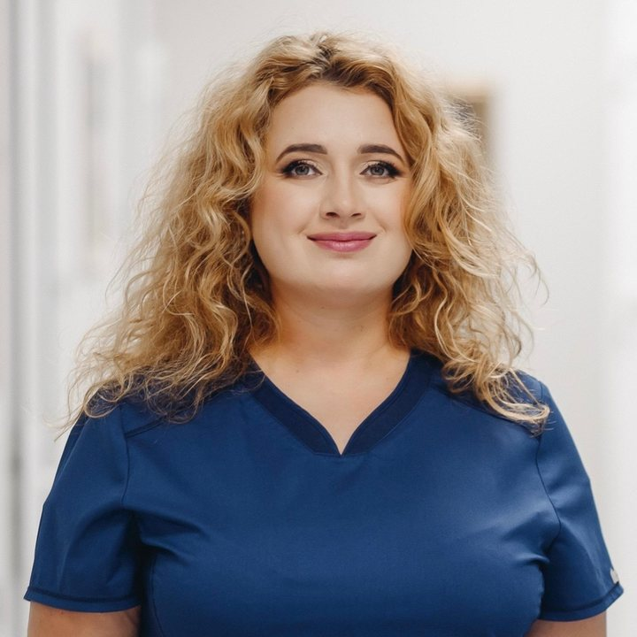

Цепколенко Ганна Володимирівна
Завідуюча відділенням регенеративних, лазерних та фото технологій. Лікар-дерматовенеролог вищої категорії, спеціаліст з лазерних технологій. Кандидат медичних наук.
- 5 з 5 73 відгуки
- Стаж роботи (років): 23
Філії VIRTUS:
- Одеса, Суднобудівна, 1Б
- Київ, Костянтинівська, 57

Послуги, які надає лікар
-
- Неофіброліфтинг (фібробласти)
Клітинні технології в естетичній медицині
- Неофіброліфтинг (фібробласти)
- Омолодження власними стовбуровими клітинами
- АМК-терапія
- Лікування наслідків вугрових висипів
- Об'ємна контурна пластика власними жировими клітинами
- Лікування рубців
- Лікування ускладнень традиційної контурної пластики та агресивних процедур
Клітиннi препарати SmartCell
- Омолодження власними стовбуровими клітинами
- Лікування вугревої хвороби (акне)
- Усунення пігментних плям
- Лазерне видалення судинних новоутворень шкiри
- Лікування себорейного дерматиту
- Лікування рубців
- АМК-терапія
- Фракційний фототермоліз (фраксель CO2)
- Симультанні операції
Догляд за шкірою обличчя, шиї та зони декольте
- Лазерне омолодження
- Неабляцiйне лазерне омолодження шкіри
- Лазерна шліфовка обличчя
- Ультразвуковий SMAS-ліфтинг
- Микрострумова терапія
- Мезотерапія обличчя та тіла
- Ін’єкції наповнювачів
- Лікування вугревої хвороби (акне)
- Підбір косметики для домашнього догляду
- Лазерне видалення судинних новоутворень шкiри
- Лазерне омолодження шкіри
- Фракційний фототермоліз (фраксель CO2)
Догляд за тілом і корекція фігури
- Лікування розтяжок
Безопераційне омолодження
- Лазерне відновлення шкіри (Fraxel)
- SMAS-ліфтинг
Лазерна епіляція
- Лазерна епіляція ніг
- Лазерна епіляція обличчя
- Лазерна епіляція
- Лазерна епіляція спини та живота
- Лазерна епіляція рук
- Лазерна епіляція підпахв
Корекція рубців
- Лазерне лікування рубців
- Ін'єкції в рубець
Діагностика
- Панч-біопсія
- Дерматоскопія
- Лазерне видалення судинних новоутворень шкiри
Застосовує клітинні технології SmartCell
- омолодження шкіри (неофіброліфтінг)
- наслідки вугрових висипань
- лікування рубців
- об’ємна контурна пластика власними жировими клітинами
- АМК-терапія (омолодження шкіри, підготовка шкіри до лазерних, радіохвильовим або ультрафіолетовим впливів)
- омолодження аутологічна стовбуровими клітинами
- клітинні технології в лікуванні ускладнень традиційної контурної пластики і агресивних процедур
- Освіта
-
У 2002 році закінчила Одеський національний медичний університет.
З 2002 по 2003 рік на базі кафедри дерматовенерології в Одеському національному медичному університеті.
У 2008 році пройшла професійну підготовку за спеціалізацією дерматовенерологія на базі кафедри дерматовенерології в Одеському національному медичному університеті
У 2012 році пройшла цикл тематичного удосконалення з дерматології на базі кафедри дерматовенерології Донецького медінституту.
З 2016 по 2019 рік аспірант кафедри дерматовенерології інституту ім. П.Л.Шупика.
- Стажування, конференції, семінари
-
Протягом багатьох років є постійним учасником Європейського конгресу дерматовенерологів EADV.
Анна Володимирівна безперервно навчається і відвідує профільні стажування:
- За лазерним технологіям Friedrich-Schiller University of Jena (м. Йена, Німеччина)
- За дерматології в університетській клініці (м. Малага, Іспанія)
- Мюнхенська Літня Школа практичної дерматології
- Членство в професійних співтовариствах
-
Член європейської асоціації дерматовенерологів (EADV).
Член міжнародної організації естетичної медицини (UIME).
- Наукова та науково-просвітницька робота
-
Співавтор 3 патентів в області медицини серед яких спосіб епігенетичного культивування аутологічних дермальних фібробластів людини.
Автор і співавтор багатьох популярних статей в спеціалізованих виданнях «Нова косметологія», «KOSMETIK international», «Дерматологія і венерологія», «Лікар», «Aesthetic Medicine» та «Clinical».

Консультація
Лікування стовбуровими клітинами починається з консультації
Прийом веде керівник клініки, доктор медичних наук, професор Володимир Цепколенко.
Записатись на консультаціюФілії VIRTUS
-
 VIRTUS · Інститут передової медицини
VIRTUS · Інститут передової медицини
Одеса, Суднобудівна, 1Б
- Пн–Пт 08:00–18:00
- Сб 09:00–17:00
- Нд вихідний
-
 Медичний інститут VIRTUS у Києві
Медичний інститут VIRTUS у Києві
Київ, Костянтинівська, 57
- Пн–Пт 09:00–18:00
- Сб 09:00–18:00
- Нд вихідний


Відгуки про лікаря
-
Якщо за красою в будь-якому віці, то до Ганни Володимирівни. Високопрофесійний спеціаліст, вирішить будь-яку проблему, проконсультує і підбере ефективну програму саме для Ваших потреб. Я цілком довіряю.
- Філія VIRTUS
- Одеса, Суднобудівна, 1Б
- Напрямок
- Дерматологія
Відгук на сайті
-
Дуже гарний лікар, грамотно провела лікування. Всім раджу Ганну Володимирівну.
- Філія VIRTUS
- Одеса, Суднобудівна, 1Б
- Напрямок
- Дерматологія
Відгук на сайті
-
Дуже сподобалася лікар Цепколенко Ганна – привітна, уважна, турботлива. Тому ставлю 5!
- Філія VIRTUS
- Одеса, Суднобудівна, 1Б
- Напрямок
- Дерматологія
Відгук на сайті